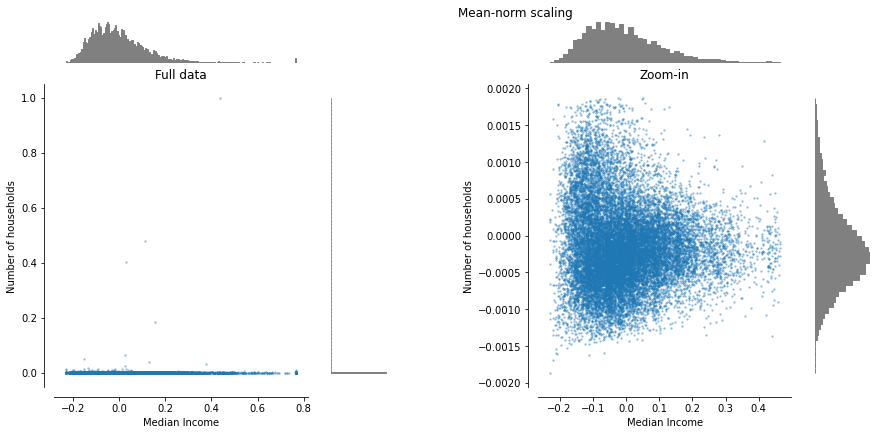
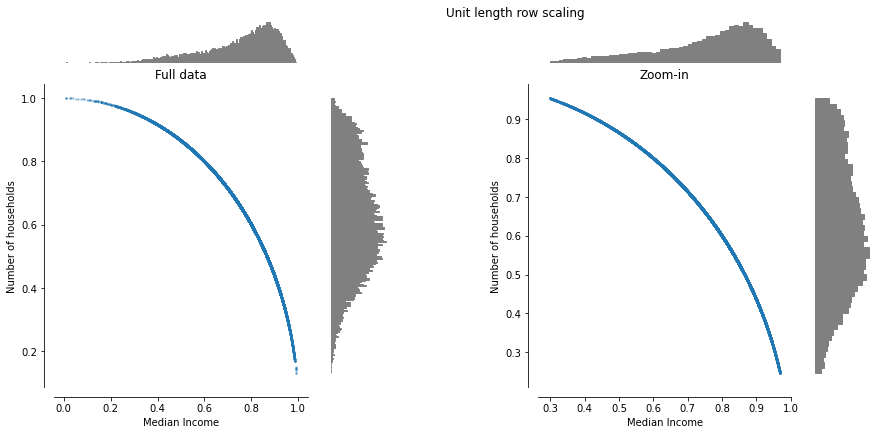
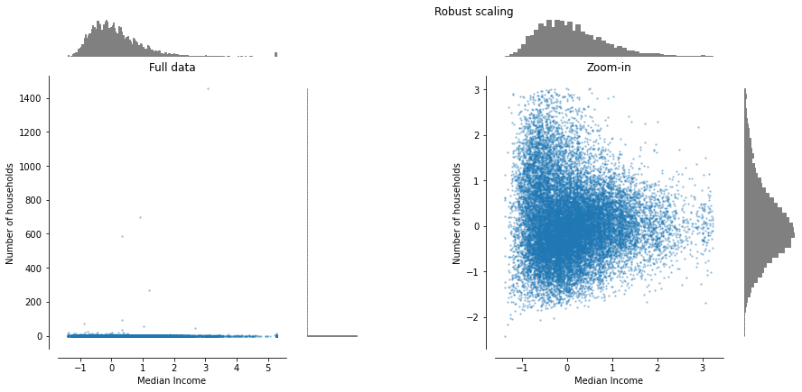

Data Normalization¶
In this notebook we’ll explore data preprocessing techniques through the California housing dataset available from sklearn. We’ll reproduce results found on the sklearn documentation [1], though we will be using our own functions to understand how each method works. For production its a good idea to use the sklearn methods as they provide a convenient API for ML pipelines. Links to skleran relevant docs can be found at the end of the notebook.
We begin with our standard imports:
import numpy as np
import matplotlib as mpl
import matplotlib.pyplot as plt
from matplotlib import cm
# Load the example dataset
from sklearn.datasets import fetch_california_housing
We define our dataset and create some auxiliary functions for plotting. We will only use two features, median income and number of house holds. The plotting functions are available from the utils.py file.
dataset = fetch_california_housing()
X_full = dataset.data
# Take only 2 features to make visualization easier
# Feature of 0 has a long tail distribution.
# Feature 5 has a few but very large outliers.
X = X_full[:, [0, 5]]
from utils import make_plot
# Original Data
make_plot('Unscaled data', X)
Our base plot shows data in its original scale. We will review the effect of different scalings by comparing them to the plot above.
Introduction¶
Data normalization is a standard preprocessing step that helps equalize the relative importance of features before applying a learning algorithm [2]. By applying normalization the effect of each feature particular scale is removed, all quantities become dimensionless.
For example, many classifiers calculate the distance between two points by the Euclidean distance. If one of the features has a broad range of values, the distance will be governed by this particular feature. Therefore, the range of all features should be normalized so that each feature contributes approximately proportionately to the final distance.
From [3]. If one input has a range of 0 to 1, while another input has a range of 0 to 1,000,000, then the contribution of the first input to the distance will be swamped by the second input. So it is essential to rescale the inputs so that their variability reflects their importance, or at least is not in inverse relation to their importance. For lack of better prior information, it is common to standardize each input to the same range or the same standard deviation. If you know that some inputs are more important than others, it may help to scale the inputs such that the more important ones have larger variances and/or ranges.
Standardizing input variables can have far more important effects on initialization of the weights than simply avoiding saturation. Assume we have an MLP with one hidden layer applied to a classification problem and are therefore interested in the hyperplanes defined by each hidden unit. Each hyperplane is the locus of points where the net-input to the hidden unit is zero and is thus the classification boundary generated by that hidden unit considered in isolation. The connection weights from the inputs to a hidden unit determine the orientation of the hyperplane. The bias determines the distance of the hyperplane from the origin. If the bias terms are all small random numbers, then all the hyperplanes will pass close to the origin. Hence, if the data are not centered at the origin, the hyperplane may fail to pass through the data cloud. If all the inputs have a small coefficient of variation, it is quite possible that all the initial hyperplanes will miss the data entirely. With such a poor initialization, local minima are very likely to occur. It is therefore important to center the inputs to get good random initializations. In particular, scaling the inputs to [-1,1] will work better than [0,1], although any scaling that sets to zero the mean or median or other measure of central tendency is likely to be as good, and robust estimators of location and scale (Iglewicz, 1983) will be even better for input variables with extreme outliers.
Thus it is easy to see that you will get better initializations if the data are centered near zero and if most of the data are distributed over an interval of roughly [-1,1] or [-2,2]. If you are firmly opposed to the idea of standardizing the input variables, you can compensate by transforming the initial weights, but this is much more complicated than standardizing the input variables.
Another reason why feature scaling is applied is that gradient descent converges much faster with feature scaling than without it.
Various other pairs of location and scale estimators can be used besides the mean and standard deviation, or midrange and range. Robust estimates of location and scale are desirable if the inputs contain outliers.
Min-max normalization¶
To re-scale a range between an arbitrary set of values \([a, b]\)
The general formula for a min-max of \([0, 1]\) is given as:
Mean normalization¶
Center the data, such that the scaled mean is at zero. The scaled range is 1.

Standardization¶
Feature standardization makes the values of each feature in the data have zero-mean (when subtracting the mean in the numerator) and unit-variance. The general method of calculation is to determine the distribution mean and standard deviation for each feature. Next we subtract the mean from each feature. Then we divide the values (mean is already subtracted) of each feature by its standard deviation.
Scaling rows to unit length¶
Another option that is widely used in machine-learning is to scale the components of a feature vector such that the complete vector has length one. This usually means dividing each component by the Euclidean length of the vector:
In some applications it can be more practical to use the L1 norm of the feature vector. Note that this transformation acts on ROWS, not columns of the data matrix. It is useful when using similarity measures based on the vector dot product, such as when working with Natural Language Processing models.

Max-abs normalization¶
Scales features so that the maximum absolute value of each feature is scaled to unit size. The motivation to use this scaling include robustness to very small standard deviations of features and preserving zero entries in sparse data. It does not shift/center the data, and thus does not destroy any sparsity.
Scaling data with outliers¶
If your data contains many outliers, scaling using the mean and variance of the data is likely to not work very well. A more robust scaling removes the median and scales the data according to the quantile range.

Assignment¶
Your assignment is to implement all normalization schemes from scratch.
You may compare your plots to the ones found here to validate your answers.
References¶
- 1
SciKit Learn Developers. Preprocessing data - scikit-learn 0.24.1 documentation. URL: https://scikit-learn.org/stable/modules/preprocessing.html (visited on 2021-03-11).
- 2
Wikipedia contributors. Feature scaling — Wikipedia, the free encyclopedia. 2021. [Online; accessed 11-March-2021]. URL: https://en.wikipedia.org/w/index.php?title=Feature_scaling&oldid=1001781300.
- 3
Warren Sarle. Comp.ai.neural-nets FAQ, Part 2 of 7: Learning, Section - Should I normalize/standardize/rescale the data? URL: http://www.faqs.org/faqs/ai-faq/neural-nets/part2/section-16.html (visited on 2021-03-11).
TO-DO¶
[ ] Include examples using sklearn methods for comparison.
[ ] Discuss power transforms (box-cox, yeo-johnson)
[ ] General distribution matching (quantile transform, equalization)